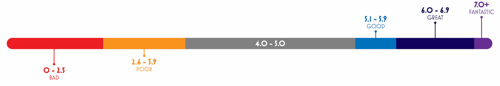

Five things can happen to a baker during a week in the tent. They can be awarded the Star Baker crown, be in the running for Star Baker, be comfortably in the middle of the pack, be in danger of elimination, or get eliminated. The Performance Score is a percentage of how well a baker performed vs what a perfect performance would have been during their run on the show. The equation is shown below.
s = weeks as Star Bakert = weeks in the running for Star Baker
n = weeks in the middle of the packd = weeks in danger of elimination
w = baker's total weeks in competition
If a baker was able to win Star Baker every week, this is how their Performance Score would be calculated:
Realistically, it's unlikely that a baker will be able to earn a perfect score of 100. So, what is considered a good score? Based on the current data, anything from zero to 29.9 qualifies as 'bad', scores between 30 and 39.9 are 'poor', the 40 - 54.9 range is average, 55 - 59.9 moves up to 'good', 60 - 69.9 is 'great', and anything above 70 is 'fantastic'.
Fantastic: 4/110 bakers Great: 17/110 bakers Good: 9/110 bakers Average: 37/110 bakers Poor: 18/110 bakers Bad: 25/110 bakers
Fantastic: 2/9 bakers Great: 5/9 bakers Good: 1/9 bakers Average: 1/9 bakers
Fantastic: 2/18 bakers Great: 12/18 bakers Good: 2/18 bakers Average: 2/18 bakers
Good: 1/9 bakers Average: 7/9 bakers Poor: 1/9 bakers